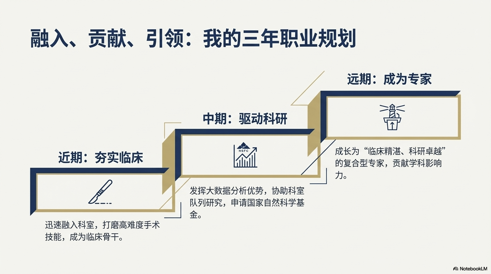
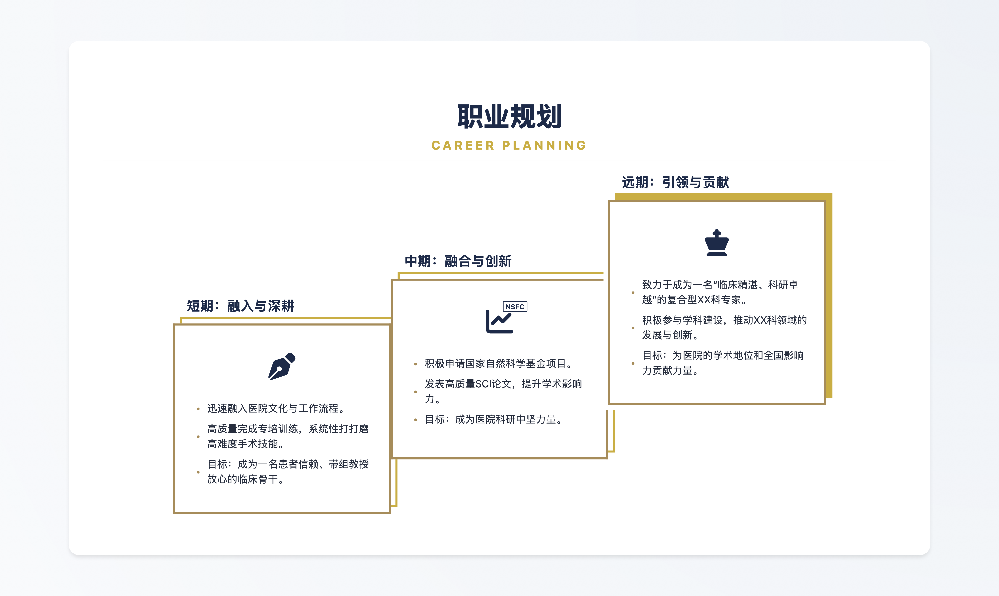
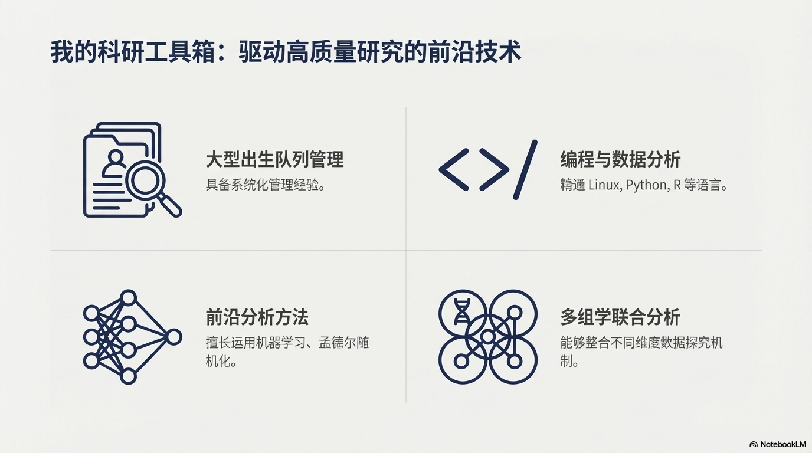
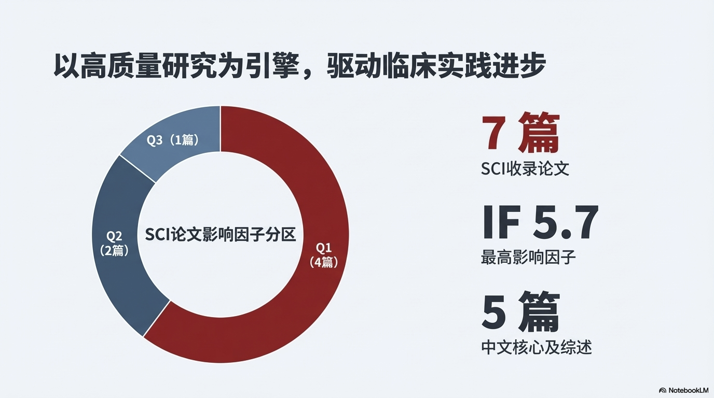

AI 辅助 PPT 制作方案
Gemini 3 + NotebookLM + HTML 精修
概述
使用 Gemini 3 等免费 AI 工具辅助能够轻松制作美观与设计感兼具的 PPT。
Tips：如果能熟练掌握 HTML 语言，就能高效率制作好看的 PPT。
整体流程
以制作面试 PPT 为例：
第一步：AI 制作 PPT 草稿
- 将 个人简历 投喂给 Gemini 3，明确岗位需求、PPT 时长及内容要求。
- 将演讲稿保存到 NotebookLM，通过对话补充细节。
- 使用 NotebookLM 演示文稿功能 生成 PPT（注：仅支持 PDF 格式下载）。
第二步：AI 辅助制作精致 PPT
路径 1：传统方式
参考 NotebookLM 的设计亮点，在 PowerPoint 中手动绘制。
路径 2：HTML 还原（推荐）
将设计截图投喂给 Gemini 3，使用 HTML 语言还原页面。网页比 PPT 更立体、交互更生动。
案例讲解
HTML 语句还原设计亮点
将图片上传给 Gemini 3，限定页面格式并提供参考代码。以下是案例部分 CSS 变量设置：
:root {
--slate-gray: #2C3E50; /* 深灰蓝 */
--academic-gold: #B08D57; /* 沉稳的哑光金 */
--bg-neutral: #F4F4F2; /* 浅米灰背景 */
}
通过 VS Code 修改代码并实时在浏览器预览效果。
将网页转换为 PPT
若必须使用 PPT 格式放映，可按以下步骤操作：
- 将制作好的网页导出为 PDF。
- 将 PDF 转为 高清图片（如 300 dpi 的 PNG）。
- 将图片全屏插入到 Powerpoint 中。
案例成果展示
以下展示由 Gemini 3 亮点设计转换成 HTML-PPT 页面的实际案例：
案例 1：设计亮点还原
Gemini 3 设计草图 (PDF)
最终 HTML 页面成品
案例 2 & 3：多模块融合
NotebookLM 原始亮点1
NotebookLM 原始亮点2

最终 HTML 页面成品

总结
理解 AI，善用 AI： 将大任务分解为 AI 擅长的小任务（如代码编写、排版设计），使用清晰、目的明确的语言进行沟通。